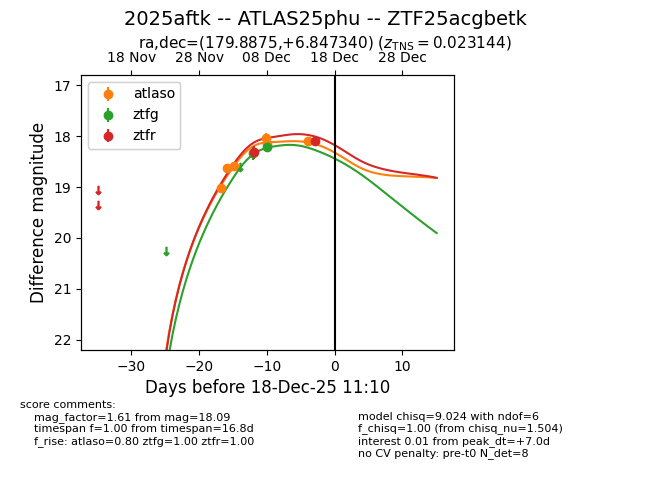
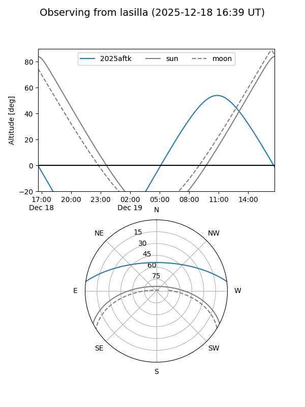
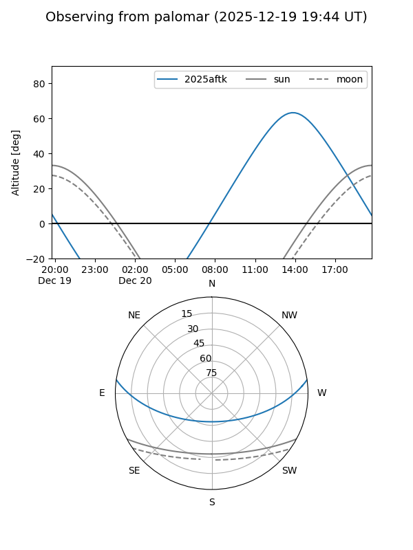
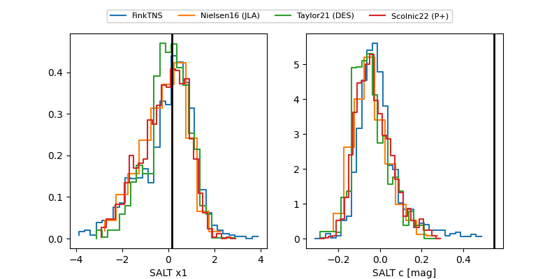

2025aftk
Target 2025aftk at 2025-12-18 11:17
Aliases and brokers:
FINK: fink-portal.org/ZTF25acgbetk
Lasair: lasair-ztf.lsst.ac.uk/objects/ZTF25acgbetk
ALeRCE: alerce.online/object/ZTF25acgbetk
TNS: wis-tns.org/object/2025aftk
YSE: ziggy.ucolick.org/yse/transient_detail/2025aftk
alt names
ZTF25acgbetk (ztf,fink_ztf)
2025aftk (tns,yse)
ATLAS25phu (atlas)
Coordinates:
equatorial (ra, dec) = 179.8875,+6.84734
equatorial (HMS+DMS) = 11:59:33.01,+06:50:50.42
galactic (l, b) = (269.3019,+66.27029)
Photometry
last atlaso=18.09, ztfg=18.22, ztfr=18.09
6 atlaso, 2 ztfg, 2 ztfr detections
Lightcurve

Visibility


Additional plots
